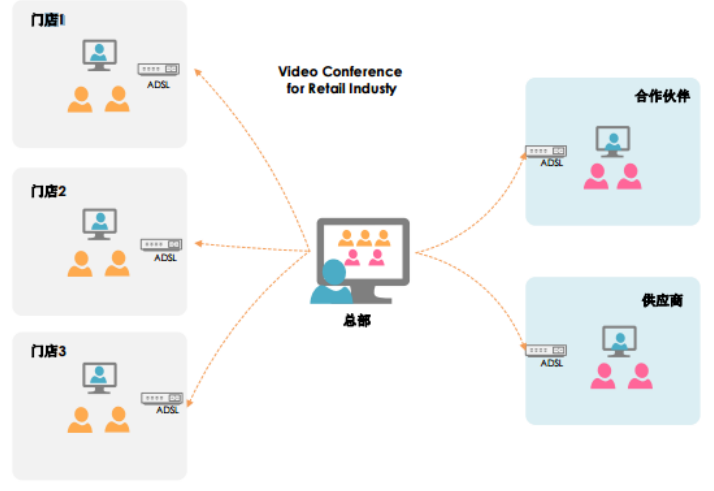
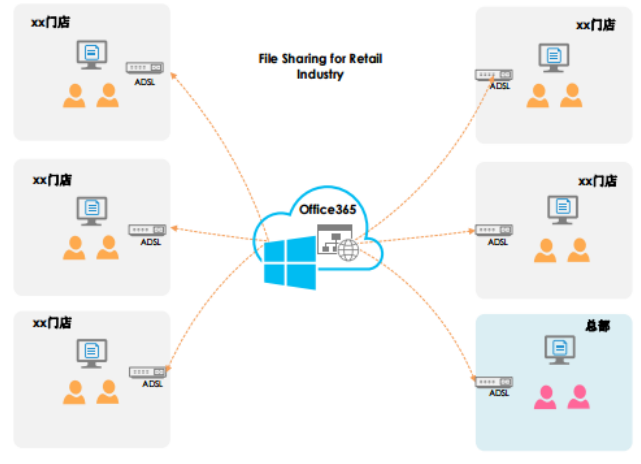

Microsoft Office365
产品简介
Office365是微软为所有企业实现最佳生产力和高效协同工作的高端云服务。它将常用的Office桌 面端应用的优势与企业级邮件系统、在线文件分享、即时消息和可视网络会议功能（Exchange Online, SharePoint Online and Lync Online） 融为一体，满足不同类型企业的办公需求。
功能介绍
移动办公
-
Office365可以让您从任何地点、任意设备访问您的文件，新的Office能够在您几乎所 有的设备上完美运行，但在 Windows 8 平台上将能够发挥它最大的性能，为您带来更 加逼真的、优化的触摸体验。您可以体验一些令人心情愉悦的功能，如使用指尖缩放、 在进行 PowerPoint演讲的时候缩放、或对您的 Outlook 日历进行缩放，或对以月为单 位的视图进行缩放，等等。
简化文档保存和共享
-
默认状态下，新的 Office 总是会登录并把文件存储到云当中。在您登录到 Office 当 中 时，您可以通过您的漫游设置并快速访问您存储在 SkyDrive、SkyDrive Pro、以及 SharePoint 当中的文件。
大规模企业级的功能，中小企业可承受的价格
-
Office 365 为您提供了跨您所有的设备的最佳的体验，为您提供了支持您的业务增长所需的完整的工 具序列，而所有的这些，都可以通过可控的、在您的预算范围之内的。
无需前期基础设施成本, 最大程度降低成本
-
一站式完整的云办公服务，免除服务器等基础设施投入，帮助企业降低IT总体成本，让您专 注发展。 易于操作的管理平台，让您无需IT专业人员也能轻松掌握，灵活调整公司资源。 按月订阅服务，按需付费，减少初始资金投入，让您有更多的资金发展核心业务。
支持多方高清视频会议 — Lync Online
Microsoft Lync Online 是一款通过将 Lync Server 2013 的协作功能作为基于云的服务提供、 支持您随时从几乎任何位置联系人员的托管通信服务。它支持用户访问状态、即时消息、音频 和视频呼叫、丰富的在线会议和一系列Web 会议功能。
-
以合适的方式通信
-
Lync 将音频呼叫、视频呼叫、Lync 会议、状态以及即时消息 (IM) 统一到一个易于使用的客户端， 让您可以轻松在不同通信方式间进行选择和切换。
-
利用基于标准的高清视频
-
Lync 使用开放标准（包括 H.264 SVC）在多种设备上提供优质视频体验。
-
多设备支持、随时保持联系
-
Lync 支持用户从任何有网络连接的地方进行通信，并且可以自动适应网络状况。支持多种设备，任您 选择：Lync 在Windows PC、Windows Phone、iOS、Mac 和 Android 智能手机上提供熟悉而一致 的体验，使通信更加容易。适用于Windows 8 和 Windows RT 的全新沉浸式 Lync 应用提供了触控优 先的无缝体验。

企业内网方案— SharePoint Online
可以提供强大内网网站，文档共享，新闻更新和审批等功能，而且无需花费自行管理基础 结构所带来的相关开销。灵活的管理选项可以确保您具有相应的控制，以满足组织的合规 性要求。
-
让社交发挥作用
-
利用 SharePoint 中随处可见的新社交功能共享想法、搜索解答、关注同事及公司新闻。
-
进行分享
-
只需点击几下鼠标，即可从任何 Office 应用程序将内容发布到 SharePoint 并与组织内外的人员共享。
-
将 SharePoint 带向移动
-
从移动手机或平板设备共享文档、更新活动源、保持与同事的联络。
-
维持项目的正常进展
-
组织您的所有项目和任务，使即将得到的交付物跨 SharePoint、Outlook 和 Microsoft Project 可见。
-
保持工作组的联络
-
在数分钟内设置新的工作组网站，以跟踪会议记录并将工作组的所有邮件和文档统一放到一个位置。
-
存储和同步文档
-
利用 SkyDrive Pro 将 SharePoint 中的内容同步到桌面，这样只需点击鼠标即可获取文档。

企业邮箱解决方案 —Exchange Online
将企业级的电子邮件、日历和联系人服务带到您的PC\手机和浏览器上。通过office365的exchange邮箱可以提高生产率和保护组织的安全，同时保持对所需内容的控制，在 Microsoft 遍布全球的海量服务器上运行您的电子邮件，可受到反恶意软件和反垃圾邮件过滤器 的保护，并享受全年无休的IT电话支持。
-
安全可靠
-
Office365上的Exchange高度的安全性和先进的可靠性有助于保护您的信息。通过一项服务，持 续抵御最新的恶意软件和垃圾邮件，这项服务每天可处理世界各地数以亿计的邮件，并不断更 新以快速应对新的恶意软件和垃圾邮件威胁。防止数据丢失 (DLP) 功能可阻止用户误将敏感信 息发给未授权的人，同时还将向这些人告知内部合规性策略。数据托管在分布各地的数据中心 内，其中持续备份数据，提供首屈一指的灾难恢复功能，并有安全专家团队全年无休地监控 Exchange Online，从而保护数据的安全。
-
易于使用和维护
-
为用户提供提高工作效率所需的企业级电子邮件的过程比以往更轻松。通过向用户提供就地存 档功能，将所有重要数据集于一处，为用户提供完美融合的自然体验。通过用户所依赖的所有 主要浏览器和具有触摸功能的设备，可在任何地方按照一致的方式安全地访问信息。与 Outlook 无缝集成，因此用户可享受功能丰富且为人熟知的电子邮件体验，并可进行脱机访问。